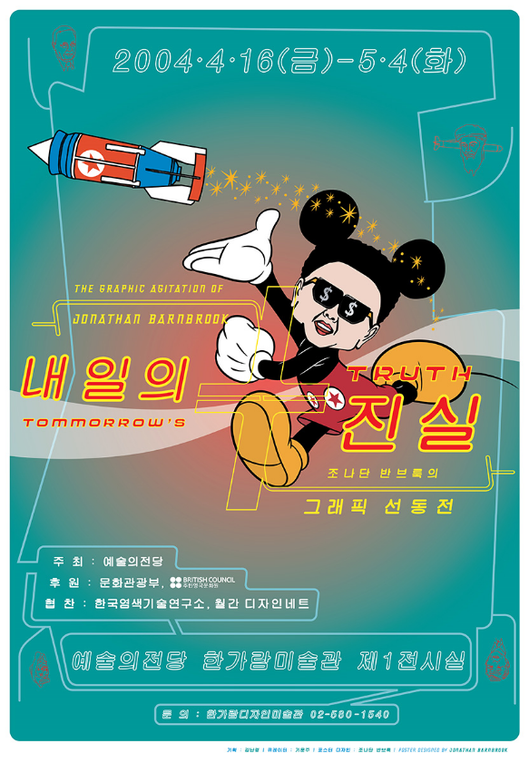
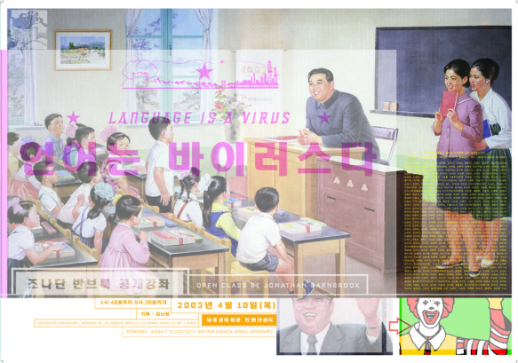
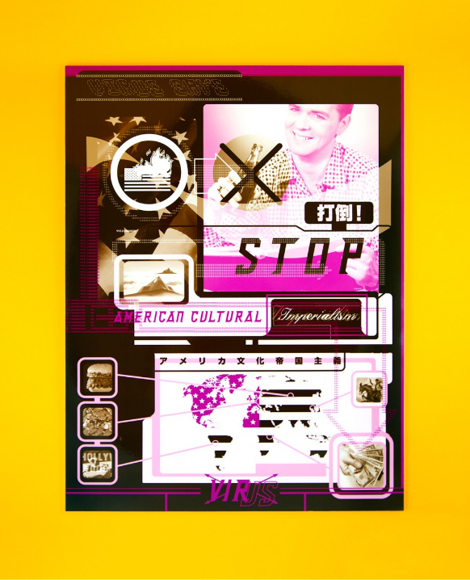
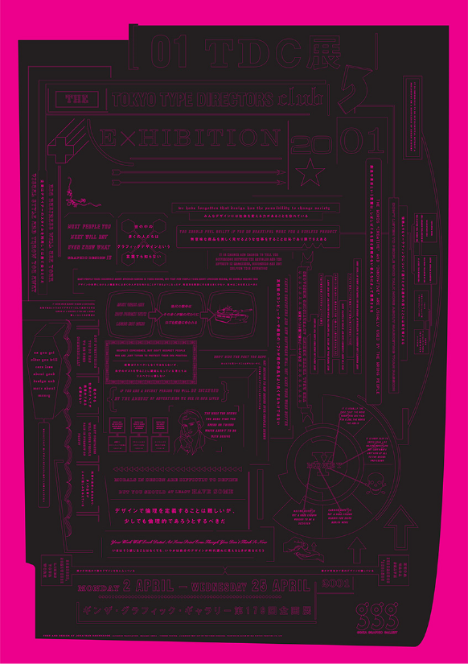

2005년 일본 도쿄 긴자 그래픽 갤러리에서
열린 반브룩 회고전을 알리기 위해 기획된
포스터. 포스터에는 기업 로고로 구성된 티
베트 만다라(Mandala)인 우리가 자체 제
작한 작품들이 자세히 담겨 있다.
Tomorrow’s Truth

2004
예술의전당
서울
예술의 전당에서의 회고전과 서울에서의
강연을 위한 두 개의 포스터. 메인 포스터
는 북한의 전 독재자인 김정일을 미키 마우
스로 묘사하고 있다. 내일의 진실에 사용된
서체는 토마호크 크루즈 미사일의 글자를
기반으로 한 우리의 충격과 경외심 서체이
다.

두 번째 포스터에는 한국의 첫 번째 독재자
인 김일성의 선전 이미지가 사용된다. 위에
겹쳐진 것이 강의 제목이다. 윌리엄 버로우
가 인용한 '언어는 우주에서 온 바이러스'
중 언어는 바이러스 부분이다. 강의는 반브
룩의 타이포그래픽과 정치적 작업을 강조
했다.
Stop American Cultural Imperialism

2001
바이러스 폰트
런던
이 포스터는 서체 회사인 VirusFonts가 일
본 배급사인 Digitalogue와 함께 서체를
발매한 것을 기념하기 위해 만든 것이다.
주요 메시지는 Stop American Cultural
Imperialism이라는 것이다. 일본의 주권
영토에 위치한 대규모 미국 기지의 존재와
미국 소비 문화가 사회의 모든 면에 일반적
으로 침투하는 것으로 일본 내에서 이슈가
되고 있다.
Tokyo Type Directors Club Exhibition

2001
도쿄 감독 클럽
도쿄
이 이중언어 포스터는 매년 열리는 전시회
를 홍보하기 위해 일본의 도쿄 디렉터 클럽
을 위해 제작되었다. 그 디자인은 멕시코의
점술과 종교적으로 인쇄된 에페메라에 많
은 영향을 받았다. 그러나 문제는 오늘날
사회에서 그래픽 디자이너가 되는 현실적
인 어려움이다.